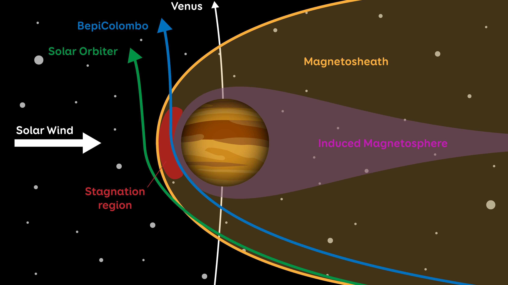

Josef Carrington
About Me
I am a graduate with a master's degree in mathematics and an
interest in data analysis, coding and modelling. I enjoy turning
complex theory into meaningful, interactive projects.
Much of my work revolves around space (including stars, orbits,
and missions) as this is a strong passion of mine. I am also
interested in finance and sports and have built various models
and conducted data analysis on things likes the stock market,
the NBA and the Premier League.
I am constantly looking to learn and develop my skillset with my
aim to make a meaningful impact in physics and financial fields,
whilst helping us strive towards a more sustainable future.

CURRENT PROJECT
Planetary Atmospheres
I am currently working on a project to study the atmospheres of various planets - looking at all the planets in our solar system, and a few select exoplanets. All my data is sourced from the NASA Horizons System (LINK!!!!!!!) and the NASA Exoplanet Archive (LINK!!!!!!!).
The aim of this project is to study the chemical makeup and behaviour of a range of atmospheres. The atmosphere of a planet can be affected by many things - such as the distance from its star, orbit and spin, temperature, or even surface activity. The aim of this project was to study things like circulation, content, and density of atmospheres, to determine how they may impact the planet and its surface. Combining this with my studies on Earth, I can notice some factors that may encourage and discourage life - knowledge that can help us search for other planets capable of hosting humans or other life forms.
I began by gathering data on the planets in our solar system and compiling these into one large dataset. From here I could generate plots of things like temperatures, elements and their density, atmospheric density, and atmospheric depth - which will be used later for comparison. I also adapted my oceanic circulation model to simulate the movement within the atmosphere - adding features like Jupiter's red spot. This model could then produce snapshots of the atmosphere, showing temperatures, pressures, and movement direction.
I am currently working on adding more planets to my study, and I want to collect data on some key exoplanets (some of which have potential for life). The level of detail achievable for our solar system may not be possible for distant exoplanets, however I hope the data is sufficient to draw conclusions. Once I have completed this, I will compile all my findings in a report and compare both with Earth and other planets. I can then discuss some of the key atmospheric conditions we should be looking for to sustain life.
I hope to generate accurate plots of not just circulation, but a range of data - including chemical composition, temperature and pressure, density, and any other valuable insights. I can then use this data to discuss how the atmosphere has shaped the surface of the planet, and why each atmosphere could sustain or more likely harm living organisms.
These results can then be used to determine what we should be looking for in exoplanets, as we continue our search for life outside of Earth. With new exoplanets being discovered daily, this data can help narrow our search and make it easier to predict what a planet's surface may look like.